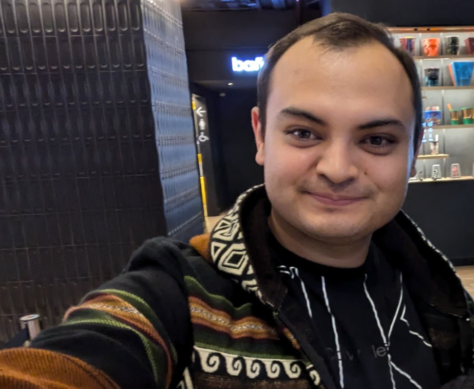

Hello, my name is Bryan, welcome to my cultural connections page!

Top two cultural shocks I've experienced
The public transportation is a lot different from my country. At the beginning I didn't even know how to make the bus stop.
So it was really weird and the first time I went for two more stops before figuring out that you only have to pull a cord.
When I went to the library it was a little bit weird for me because. I didn't really know how to print something.
I have to ask the people working there, at first they looked me as I was trying to make a joke but then they understood that i really didn't know so they helped.
Top two things I miss most
My family of course, they are the most important people of my whole life so it's difficult not having them around.
We speak almost dayly but It's not the same, sometimes I just want to have a hug of them and I know that everything will be fine.
I really miss them.
The food is also a huge thig that I really miss, even I know how to cook. it isn't the same, sometimes it's difficult to find the ingredients or if you found them they taste different.